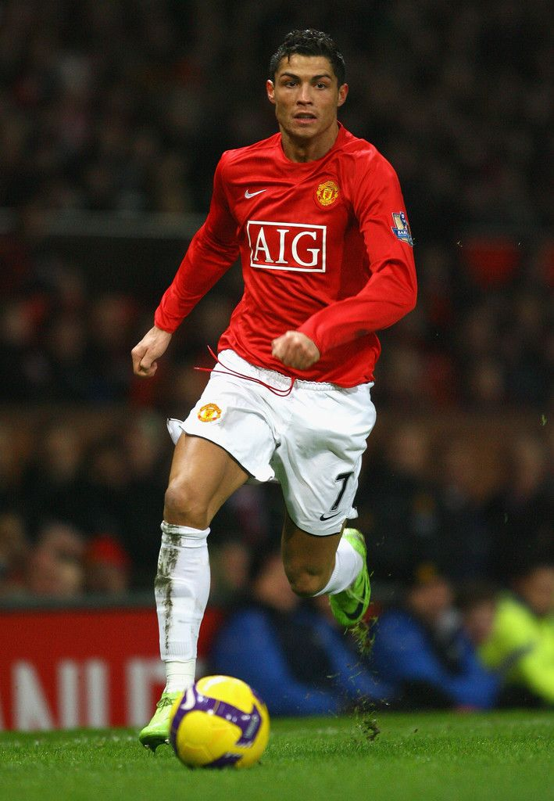
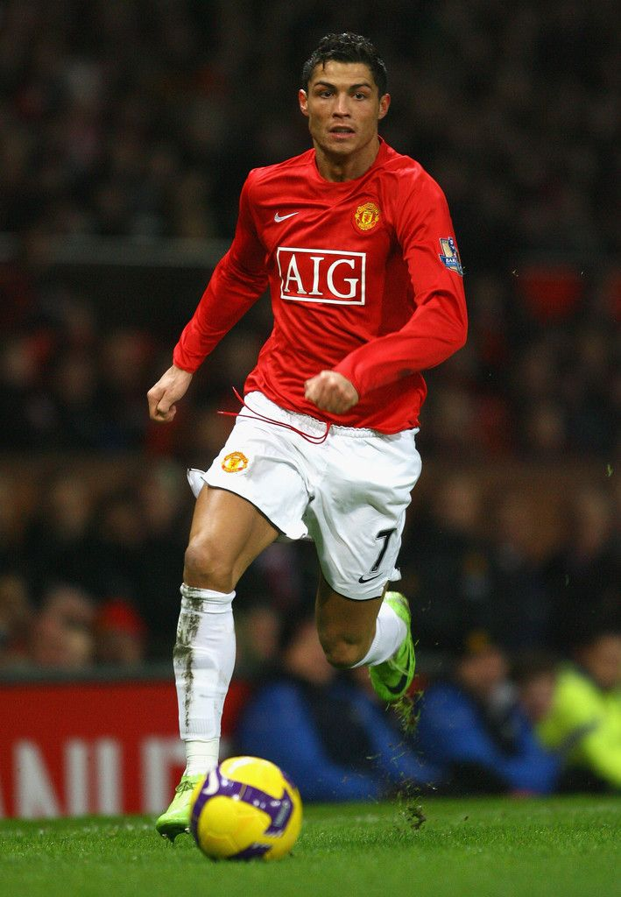

Fãs do Cristiano Ronaldo
 

O Maior Jogador de Todos os Tempos
Cristiano Ronaldo é um dos maiores jogadores da história do futebol, conhecido por sua dedicação extrema, físico impressionante e mentalidade vencedora. Nascido em Portugal, ele começou sua carreira no Sporting CP antes de se destacar no Manchester United, onde conquistou sua primeira Champions League e Bola de Ouro. No Real Madrid, tornou-se lenda, sendo o maior artilheiro do clube e vencendo quatro Champions League. Passou ainda pela Juventus e retornou ao United antes de se transferir para o Al-Nassr, na Arábia Saudita. Pela seleção portuguesa, é o maior artilheiro de todos os tempos e levou seu país à vitória na Eurocopa 2016 e na Liga das Nações em 2019.
Além do futebol, Ronaldo é um fenômeno global, com uma marca pessoal forte, patrocínios milionários e influência nas redes sociais, onde tem milhões de seguidores. Sua rivalidade com Lionel Messi marcou uma era no esporte, mas seu legado vai além, inspirando atletas com sua ética de trabalho e longevidade no alto nível. Aos 39 anos, continua competindo, provando que disciplina e paixão pelo jogo podem prolongar uma carreira de sucesso.

Site não-oficial dos fãs de Cristiano Ronaldo
Todos os direitos das imagens e vídeos pertencem a seus respectivos donos
© 2025 - Fãs do CR7